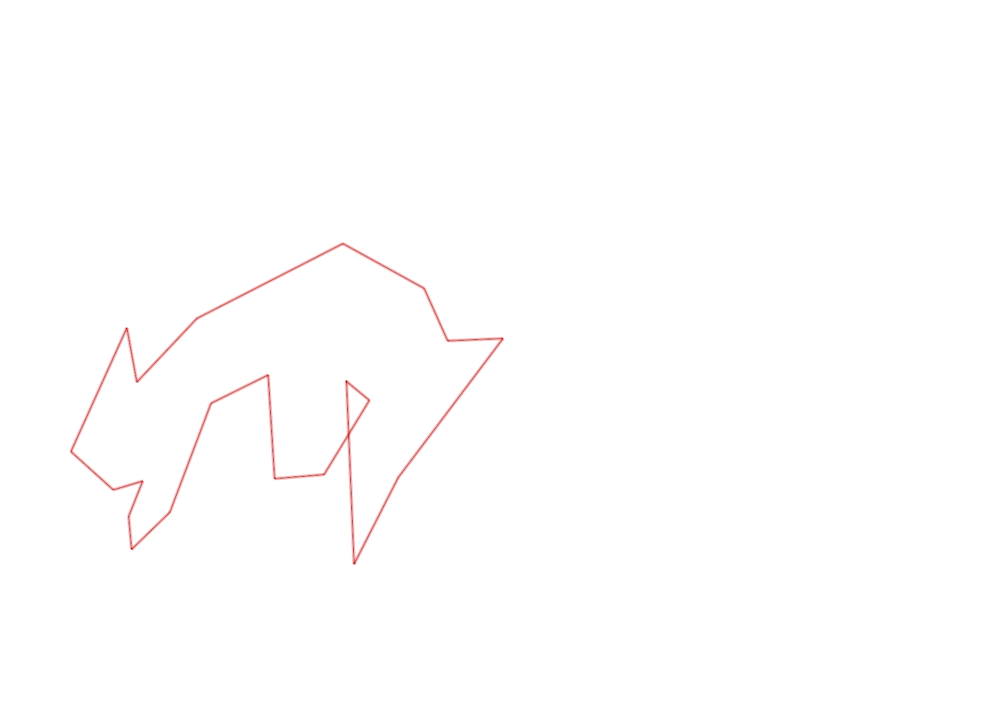
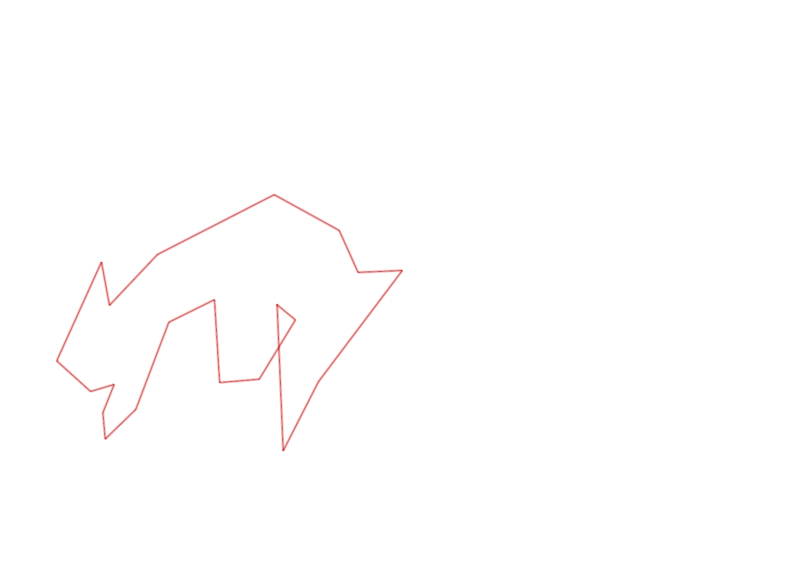

| Control |
Points |
Time Punched |
Distance |
Your Time |
Pace |
Place |
Fastest Time |
Median Time |
% Behind Fastest |
| 127 |
20 |
|
0.06 |
0:00:11 |
03:03 |
8 / 30 |
0:00:01 |
0:00:32 |
1000% |
| 38 |
30 |
|
0.18 |
0:01:53 |
10:27 |
8 / 13 |
0:01:04 |
0:01:50 |
76% |
| 60 |
60 |
|
0.11 |
0:00:47 |
07:07 |
5 / 19 |
0:00:42 |
0:00:57 |
11% |
| 126 |
20 |
|
0.22 |
0:03:02 |
13:47 |
1 / 2 |
0:03:02 |
0:03:03 |
0% |
| 130 |
30 |
|
0.14 |
0:00:57 |
06:47 |
17 / 19 |
0:00:00 |
0:00:33 |
-% |
| 41 |
40 |
|
0.25 |
0:02:03 |
08:12 |
1 / 1 |
0:02:03 |
0:02:03 |
0% |
| 40 |
40 |
|
0.11 |
0:01:05 |
09:50 |
16 / 24 |
0:00:45 |
0:01:00 |
44% |
| 71 |
70 |
|
0.07 |
0:00:54 |
12:51 |
5 / 12 |
0:00:34 |
0:01:00 |
58% |
| 54 |
50 |
|
0.08 |
0:00:34 |
07:05 |
5 / 33 |
0:00:27 |
0:00:45 |
25% |
| 69 |
60 |
|
0.07 |
0:01:27 |
20:42 |
4 / 20 |
0:01:00 |
0:01:56 |
45% |
| 53 |
50 |
|
0.12 |
0:02:03 |
17:05 |
19 / 26 |
0:01:16 |
0:01:51 |
61% |
| 32 |
30 |
|
0.29 |
0:05:03 |
17:24 |
3 / 3 |
0:01:51 |
0:02:25 |
172% |
| 44 |
40 |
|
0.12 |
0:01:24 |
11:40 |
11 / 29 |
0:00:52 |
0:01:49 |
61% |
| 63 |
60 |
|
0.19 |
0:01:41 |
08:51 |
1 / 2 |
0:01:41 |
0:01:54 |
0% |
| 107 |
100 |
|
0.35 |
0:03:18 |
09:25 |
7 / 22 |
0:02:14 |
0:03:49 |
47% |
| 57 |
50 |
|
0.2 |
0:03:07 |
15:35 |
9 / 22 |
0:01:54 |
0:03:53 |
64% |
| 92 |
90 |
|
0.12 |
0:05:32 |
46:06 |
14 / 18 |
0:02:10 |
0:04:22 |
155% |
| 47 |
40 |
|
0.12 |
0:06:54 |
57:30 |
11 / 16 |
0:01:07 |
0:04:40 |
517% |
| 42 |
40 |
|
0.37 |
0:05:36 |
15:08 |
1 / 1 |
0:05:36 |
0:05:36 |
0% |
| 61 |
60 |
|
0.21 |
0:03:46 |
17:56 |
13 / 20 |
0:02:20 |
0:03:34 |
61% |
| Finish |
0 |
|
0.39 |
0:03:49 |
09:47 |
1 / 2 |
0:03:49 |
0:04:47 |
0% |
Total Distance Covered: 3.77km
Points Scored: 980
Late Penalty: 0
Final Score: 980
Total Time: 0hours 55minutes 6seconds
Efficiency: 259.95 points/km
 
